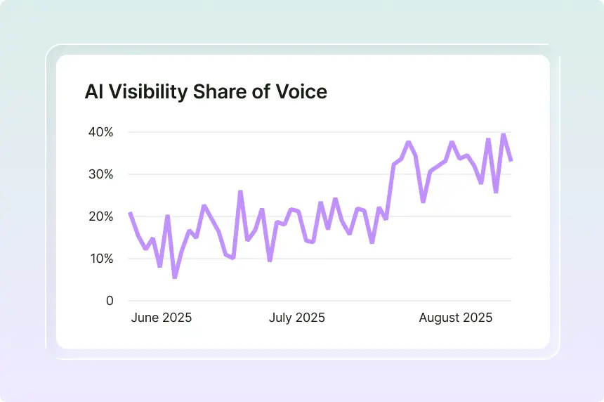

Is Semrush Worth It for a Solopreneur?
Try it: Visit Semrush.

We Used It HQ: Streamlining business, whatever your size
Disclosure: the visit links on this page are plain links and earn us nothing.
The short answer
For a one person business, Semrush full time is usually more tool than you need yet, and for agencies and growing teams it is close to essential. For solo operators it is worth using three ways: the free account for quick checks, a 7 day trial when you have a real research job lined up, or one paid month at a time when search is your main source of customers and you are publishing every week. At $139.95 a month for the entry paid plan, it has to earn its keep like an employee, not sit there like a gym membership.
What Semrush actually does
Semrush is an SEO and online visibility toolkit. In plain terms it answers four questions:
- 1. What do people type into Google in your market?
- 2. What do you, and your competitors, already show up for?
- 3. What is technically wrong with your site that holds it back?
- 4. What should you write or fix next?
It does this with keyword research, domain and competitor overviews, a site audit tool, position tracking for your chosen keywords, and content ideas. In 2026 Semrush also added AI search visibility tracking, and the company is now owned by Adobe, which tells you the direction of travel: a professional suite, priced for professionals.
The pricing, in full
Checked against Semrush's public pricing pages, November 2026:
- Free account: $0, permanent, no card. Limited to about 10 reports a day across tools, 1 project, 10 tracked keywords, and a site audit capped at 100 pages.
- SEO plan: $139.95 a month, or $117.33 a month billed annually. 5 websites, 500 tracked keywords, 3,000 reports a day.
- Starter plan: $199 a month. Adds AI search visibility prompts.
- Pro+ plan: $299 a month. 15 websites, 1,500 tracked keywords, historical data and content tools.
- Paid plans carry a 7 day free trial, and the trial needs a card. Set a cancellation reminder the day you start it.
Note for readers comparing older reviews: the old Pro, Guru and Business plan names were replaced in 2026. If a review quotes Guru pricing, it is out of date.
The solo math
$139.95 a month is $1,679 a year. Ask what that buys elsewhere in a one person business: it is roughly a year of premium WordPress hosting, or several years of a good email plan at a small list size, or a freelancer for a day or two. Semrush earns that money only if search traffic is a real revenue channel for you and you act on what it tells you, week in, week out. The tool does not do the work. It hands you a list of work.
Score against the We Used It HQ test:
- Hours saved: 3 out of 5. It replaces hours of manual keyword digging, but creates its own to do list.
- Tools replaced: 4 out of 5. Keyword research, rank tracking, audit and competitor checks in one place.
- Solo setup: 3 out of 5. Usable alone, but the interface assumes SEO vocabulary. Budget an evening to learn the basics.
- Single seat pricing: 2 out of 5. One user is included, extra seats cost more, and the entry price is a professional price.
- Exit with your data: 4 out of 5. Reports export well on paid plans. The free account is limited, which is fair.
The three ways a solopreneur should actually use it
- 1. Free account, weekly: check a handful of keywords, glance at one competitor, run the small site audit. Ten reports a day is enough for a Monday morning check in.
- 2. Trial with a job list: never start the 7 day trial to "have a look". Start it with a written list: audit the whole site, research 20 keywords, pull three competitors apart. Seven days is plenty if the list exists first.
- 3. One paid month per quarter: research in bulk, plan a quarter of content, export everything, cancel, and spend the other two months publishing. This is the pattern we recommend most, and it turns a $1,679 a year habit into about a $560 a year tool.
When full time Semrush IS worth it
- Search brings most of your customers and you publish at least weekly
- You sell something with enough margin that a handful of extra customers a month covers $140 many times over
- You run SEO for clients as part of your offer
If none of those are true yet, use the free and burst pattern and revisit when your traffic justifies it.
Ratings by business type
Solo 6 (using the burst pattern in this article; full time solo use would score 4), Micro team 7, Growing business 8, Mid sized 9, Agency 10, Online seller 8, Creator 7.
Best suited to: content led businesses, ecommerce, agencies, SaaS, and local businesses in trades people search for before they buy. The more of your income that arrives through Google, the higher your score climbs.
Verdict
Worth it as a power tool used in bursts. Rarely worth it as a permanent subscription for a one person business. Start free, trial with a job list, and let your traffic, not the sales page, tell you when to pay monthly.
Start the way this guide recommends: Visit Semrush and open the free account first.
Research note: Pricing and plan structure checked November 2026 after Semrush's 2026 plan rename. Confirm current pricing on the vendor site before buying, plans change.
Semrush is a trademark or registered trademark of Semrush Inc. in the U.S. and other countries. All rights reserved. All other trademarks are the property of their respective owners.